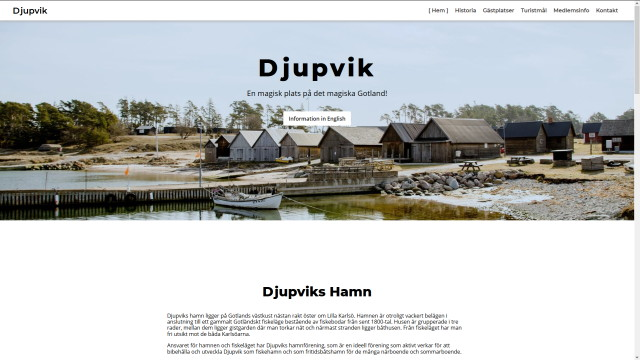
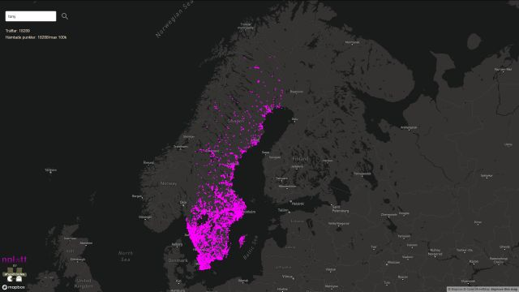
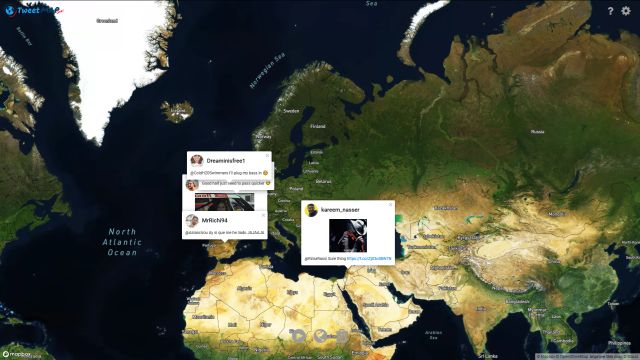

#Projects

Tweet Map Live
tweetmap.karate.monsterWeb app showing realtime tweets based on bounding box of map and optional filters Connects with socket.io to a node backend that streams the Tweets. Using Mapbox-GL for map library.


About Me
Once upon a time i was a butterfly🦋